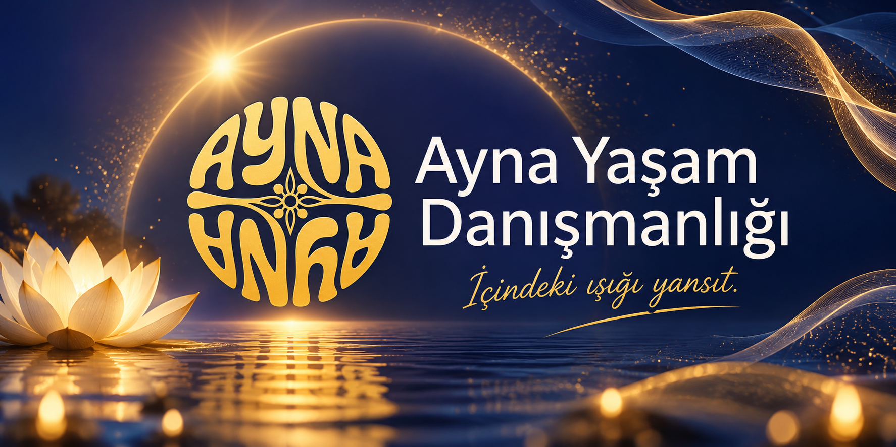
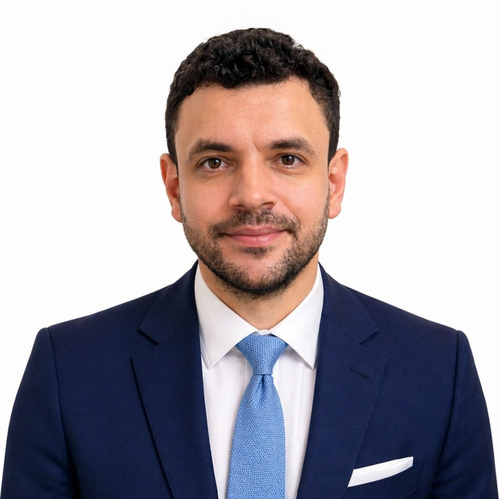

KENDİNE AÇILAN BİR KAPI
İçindeki ışığı yansıt.
Hayatın yoğunluğu içinde kendine zaman ayır. İçsel denge, pozitif yaşam alışkanlıkları ve manevi farkındalık üzerine samimi, saygılı görüşmelerle kendi yolculuğuna alan aç.

AYNA'YA HOŞ GELDİNİZ
Değişim, kendine bakmakla başlar.
AYNA Yaşam Danışmanlığı; farklı inanç ve yaşam tarzlarına saygılı, kişisel gelişim ve iyi oluş odaklı bir buluşma alanıdır. Amacımız, kendinizi dinlemenize ve günlük yaşamınızda daha bilinçli seçimler yapmanıza destek olmaktır.
Kurucu Mesut Çancılar; Gold Master enerji eğitimi, bioenerji, kozmik enerji ve spiritüel danışmanlık gibi alanlarda çeşitli eğitimler tamamlamıştır. Bu eğitimler tıbbi veya psikolojik mesleki yetki anlamına gelmez.
Eğitim geçmişini incele →
KURUCU İLE TANIŞIN
Mesut Çancılar
AYNA Yaşam Danışmanlığı Kurucusu
İnsanın kendini tanıma, içsel farkındalık geliştirme ve yaşamına yeni bir bakış açısı kazandırma yolculuğunda, kişisel gelişim ve enerji çalışmaları alanında aldığım eğitimler doğrultusunda bireysel görüşmeler sunuyorum.
Farklı yaşam tarzlarına ve inançlara saygılı, yargılamayan bir iletişimi önemsiyorum.
Görüşme seçeneklerini incele →HİZMETLERİMİZ
Kendin için bir adım at.
İhtiyacına uygun görüşme alanını keşfet. Her hizmetin kapsamı, görüşme öncesinde açıklanır.
Pozitif Yaşam ve İçsel Denge
Olumlu alışkanlıklar, farkındalık, şükür ve günlük hayatta kendine alan açma üzerine bireysel görüşmeler.
Bilgi ve görüşme talebi ↗Manevi Farkındalık
Nazar ve haset gibi konulardaki manevi kaygıları, kişinin inançlarına saygı duyarak ele alan destekleyici sohbetler.
Bilgi ve görüşme talebi ↗Geleneksel Enerji Çalışmaları
Bioenerji ve kozmik enerji gelenekleri hakkında bilgilendirme ve tıbbi olmayan, isteğe bağlı bireysel uygulamalar.
Bilgi ve görüşme talebi ↗Önemli: Hizmetlerimiz tıbbi tanı, tedavi veya psikolojik terapi değildir. Nazarın tespiti, hastalıkların iyileştirilmesi ya da doğaüstü koruma konusunda garanti verilmez.
ŞEFFAF FİYATLANDIRMA
Görüşme ücretleri
Görüşme türünü ve ücretini önceden bilerek karar verin. WhatsApp üzerinden yalnızca uygun gün ve saat için iletişime geçin.
Ön Tanışma
Kısa tanışma ve beklenti değerlendirmesi. Danışmanlık seansı değildir.
WhatsApp’tan Randevu Al ↗Bireysel Farkındalık
Kişisel farkındalık, yaşam alışkanlıkları ve hedefler üzerine bireysel görüşme.
WhatsApp’tan Randevu Al ↗Yüz Yüze Görüşme
Görüşme yeri ve uygun gün, randevu öncesinde karşılıklı belirlenir.
WhatsApp’tan Randevu Al ↗AYNA Dört Görüşme Paketi
Dört görüşme, kişisel farkındalık çalışmaları ve haftalık hedef değerlendirmesi.
WhatsApp’tan Randevu Al ↗Fiyatlar Türk lirası cinsindendir. Randevu, karşılıklı teyit sonrası kesinleşir. Hizmetler tıbbi tanı, tedavi veya psikolojik terapi yerine geçmez. Sonuç garantisi verilmez.
EĞİTİM İŞ BİRLİĞİ
Eğitim programları
Kişisel gelişim ve enerji eğitimleri hakkında kısa bilgi alın. Ayrıntıları görmek için aşağıdaki bölümü açın.
Eğitimler ve iş birliği bilgileri
AYNA Yaşam Danışmanlığı, kişisel gelişim, bioenerji, kozmik enerji ve farkındalık eğitimleriyle ilgilenenlere bilgi ve başvuru yönlendirmesi sunar.
Eğitimler, iş birliği yaptığımız Ayfer Gök – Zirve Kişisel Gelişim Akademisi tarafından verilmektedir.
Bilgilendirme: AYNA eğitimlerin doğrudan sağlayıcısı değildir. Eğitim programı, ücretler, katılım ve belgelendirme koşulları eğitim kuruluşu tarafından belirlenir. Sertifikalar kendiliğinden resmî mesleki yetki sağlamaz.
WhatsApp’tan Eğitim Bilgisi Al ↗EĞİTİM GEÇMİŞİ
Şeffaflık güvenin başlangıcıdır.
Mesut Çancılar'ın paylaştığı eğitim belgelerinde yer alan programlardan seçmeler:
Eğitim geçmişimi görüntüle
Bu bölümdeki bilgiler paylaşılan belge görsellerine dayanmaktadır; düzenleyici kurumlar ve belgelere ilişkin resmî yetki veya akreditasyon iddiaları bağımsız olarak doğrulanmamıştır. Eğitim sertifikaları sağlık alanında uygulama yetkisi vermez.
Belge görüntüleme sayfası ↗İLETİŞİM
İlk adımı birlikte atalım.
Bireysel görüşme veya eğitim hakkında bilgi almak için doğrudan WhatsApp üzerinden yazabilirsiniz. Mesajınız size ait WhatsApp uygulamasında açılır; göndermeden önce kontrol edebilirsiniz.
Görüşme ücretleri yukarıdaki fiyat tablosunda açıkça belirtilmiştir; randevu günü ve saati karşılıklı netleştirilir. Tıbbi veya psikolojik tedavi sunulmaz.
WhatsApp ile iletişime geç
Mesut Çancılar ile doğrudan iletişim kurun.
WhatsApp'tan Mesaj Gönder ↗0544 748 34 71